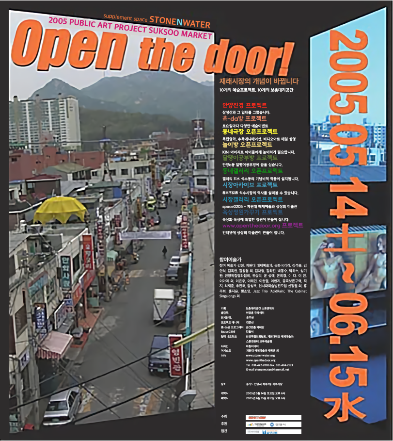
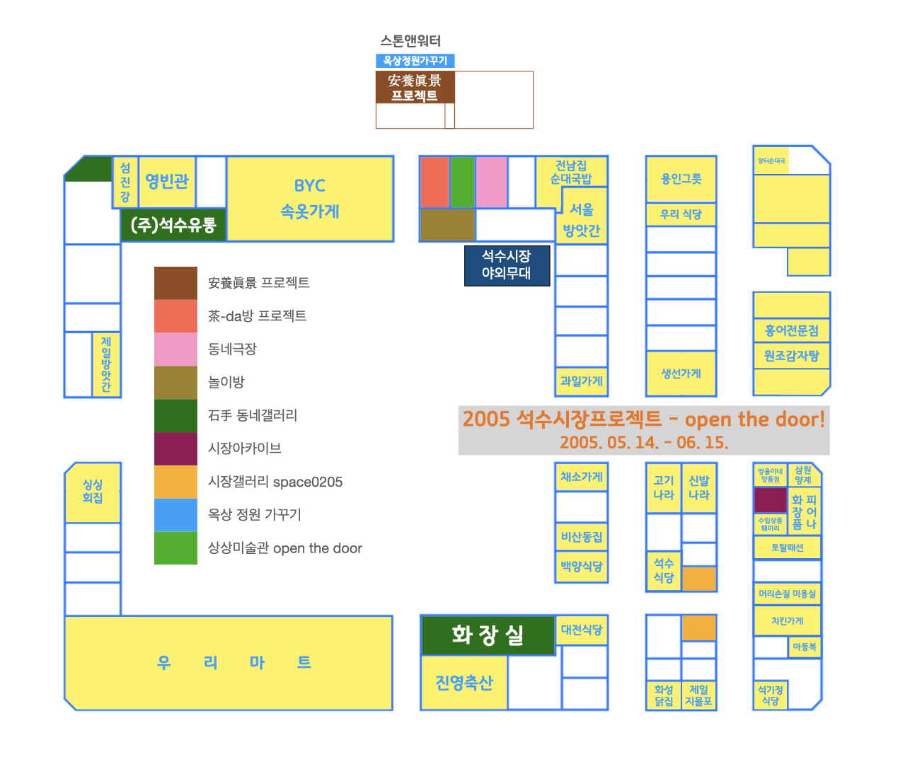

석수시장프로젝트 open the door!
2005.05.14. - 06.15.
예술가들이 재래시장을 바꿉니다.
생활 속 예술, 시장 속 예술, 상상 속 예술
10개의 예술프로젝트, 10개의 보충대리공간
- 安養眞景 프로젝트: 삼성산과 그 일대를 그렸습니다.
- 茶-da방 프로젝트: 토요일마다 다양한 예술이벤트들이 펼쳐집니다.
- 동네극장 오픈프로젝트: 독립영화, 수묵애니메이션, 비디오아트 매일상영 합니다.
- 놀이방 오픈프로젝트 : 'KIN - 아이지트' - 아이들에게는 놀이터가 필요합니다.
- 달팽이공부방 프로젝트: 안양6동 달팽이공부방에 꿈을 심습니다.
- 동네갤러리 오픈프로젝트: 갤러리 石手 석수동의 기념비적 작품이 설치됩니다.
- 시장아카이브 프로젝트: 春來不似春 석수시장의 역사를 살펴볼 수 있습니다.
- 시장갤러리 오픈프로젝트: space0205-계원대 매체예술과 학생들이 상상의 미술관을 꾸밉니다.
- 옥상정원 가꾸기 프로젝트: 屋上華 옥상에 특별한 정원이 만들어 집니다.
- www.openthedoor.co.kr 프로젝트 : 인터넷에 상상의 미술관이 만들어 집니다.

참여 예술가
강정, 계원대 매체예술과, 공화국리라, 김석용, 김안식, 김욱현, 김창겸 외, 김채형, 김화진,
박동수, 박하스, 성기완, 안양독립영화협회, 유승덕, 윤성애, 은희경, 이다, 이민, 이아미 외,
이은우, 이태건, 이현열, 이현지, 종족보존구역(김효숙, 이케다 쿄우코, 천지연, 최가영),
직지, 최재훈, 추민해, 함성호,, 홍주희, 홍지윤, 황소영,
현시대미술발전모임(신정필, 최진성, 이지연, 이명훈, 신주숙, 박동수, 변득수)
Jazz Trio 'AcidRain', The Cabinet Singalongs
기획: 보충대리공간 스톤앤워터
총감독: 이명훈 큐레이터
전시팀장: 윤두현
프로젝트 매니저: 김준선
茶-da방 프로그래머, 공연연출: 박혜강
space0205 디렉터: 김월식
협력 네트워크: 안양독립영화협회, 계원대 매체예술과, 스톤앤워터 교육예술팀
디자인: 아침미디어
어시스트: 계원대 매체예술과 재학생 외
info
http://www.stonenwater.org
tel. 031-472-2886 fax. 031-474-2193
e_mail: stonenwater@hanmail.net
장소: 경기도 안양시 석수2동 석수시장(1호선 관악역, 석수시장)
개막식 5월 14일(토) 오후 6시
폐막식 6월 15일(수) 오후 6시
후원: 한국문예진흥원, 안양시
협찬: (주)석수유통, 안양방송, 안양시민신문
< 개막식 프로그램 >
공연일시 : 2005년 5월 14일(토) 오후 6시
공연장소 : 석수시장 주차장 특설무대
거리공연 : The Cabinet Singalongs (안양역에서 석수시장까지)
opening sound : 正歌(상사별곡) 이아미 외
축하공연 : Jazz Trio - AcidRain(김유식, 남광현, 양영호)
계원대 매체예술과 돌발퍼포먼스 : 물고기의 사파리(이다미, 유지혜), 예술을 파는 각설이(최은경), 날개달린 신발(이나영),
빗자루(강연숙), 캔디(강명희), 석수시장사수퍼포먼스(소재우, 도종준, 김형식, 김형주, 박상현, 추수희, 양재형, 박정신)
< 폐막식 프로그램 >
폐막일 : 2005년 6월 15일(수요일)
장소 : 茶-da방, 야외무대(주차장)
주최 : STONE & WATER
■ 프로그램 안내
1부 오후 2:00-3:00 열린토론(1)
2부 오후 3:10-4:10 열린토론(2)
3부 오후 6:50-7:20 폐막식
4부 오후 7:30-8:30 지역민, 상인, 예술가의 화합의 장(석수노래자랑)
■ 1부 열린토론(1)
주제 : 33일간의 석수시장프로젝트 평가
장소 : 茶-da방
발제 1 : 종합적인 평가-이명훈 총감독
발제 2 : 전시평가(미술부분)-윤두현 전시팀장
지명토론자 : 김월식, 박혜강(섭외)
참석자 : 참여예술가, 언론인, 지역상인, 관객
■ 2부: 열린토론(2)
주제 : 2006 재래시장프로젝트의 새로운 제안
장소 : 茶-da방
발제 : (가제) 2006 재래시장프로젝트: 석수시장 VS 중앙시장
발제자 : 이명훈 큐레이터
지명토론자 : 최병렬, 김영부, 박찬응
참석자 : 참여예술가, 언론인, 지역상인, 관객
■ 3부 폐막식
빔 프로젝션 : 석수시장 프로젝트 현장보고
인사말 : 이명훈 총감독
시낭송 : 스텝, 작가, 관객 등 릴레이 시낭송
폐회사 : 박찬응 관장
기념촬영
■ 4부 뒷풀이 : 예술가, 상인, 지역민의 화합의 장
석수시장 노래자랑 <장보고 노래하고...>
노래경연(예선없이 본선경연, 참가신청)
초대가수: 지역의 숨은 가수
시상: 석수동 노래왕 1명, 동네가수상 1명, 인기상 2명, 음치상 2명,
참가자 전원에게는 기념품을, 참석관객에게는 행운상 추첨을 통해 경품을 드립니다.
< 석수시장프로젝트 open the door! 보도자료-본문 >
예술가들이 재래시장을 바꾼다.
석수시장에서 6월 15일까지 예술가들 야단법석
죽지마, 얼지마, 부활할꺼야!
재래시장을 살려라! 예술가들에 특명이 내려졌다. 안양 석수 2동에 위치한 석수시장에는 꾸준히 예술가들이 들락거리고 있다. 그들은 석수시장을 구석구석 관찰하거나, 상인들에게 궁금한 것을 물어보거나, 빈 상점, 버려진 물건들을 이리저리 살펴본다. 과연 이들은 무엇을 하려는 것일까?
대형할인마트나 백화점에 상권이 완전히 빼앗긴 침체일로의 석수시장. 재래시장의 원형이 아주 작게 남아 있는 곳이다. 그곳에 ‘보충대리공간 스톤앤워터(stone & water)’라는 20평 남짓 작은 예술공간이 있다. 한마디로 ‘시장 속 미술관’이다. 이곳은 박찬응 관장이 2002년 6월에 개관해 그동안 크고 작은 사건을 벌여온 평범하지 않은 공간으로 미술계에선 ‘대안공간’으로 통한다. ‘생활 속 예술’ 즉 일상생활로부터 멀어진 예술을 다시 생활 속으로 돌아오게 하자는 모토로 어떻게 하면 예술가들을 생활 속으로 돌아 올 수 있을지 여러 가지 궁리를 한다고 한다. 궁리 끝에 석수시장을 ‘벽없는 미술관’, ‘상상의 미술관’으로 바꿔보자는 아이디어를 제시했는데, 이번 주 14일 토요일에 개막하는 <석수시장프로젝트>가 그것이다.
이 행사를 기획한 이명훈 큐레이터는 “재래시장의 활성화 과제는 비단 서민경제의 몰락에 따른 그 해결방안의 모색만으로 한정 되지 않습니다. 재래시장은 서민 경제의 장이기도 하지만 서민문화의 장소이기도 합니다. 백화점, 대형할인마트가 세워짐에 따라 주변 재래시장이 하나 둘씩 몰락합니다. 이것은 글로벌 시대의 문화예술 현상에서도 마찬가지입니다. 우리의 재래문화, 서민문화, 지역문화의 진면목이 사라지고 있습니다. 따라서 석수시장은 예술가들에게 매우 흥미로운 곳입니다.”
문을 열어! ‘상상의 미술관’이 된 석수시장
재래시장을 어떻게 볼 것인가? 단지 경제적 관점만으로 보지 않고 문화적 관점으로도 보자는 주장이다. 그렇다면 예술가들이 앞장서 재래시장에 활력을 불어 넣을 수 없을까? <석수시장프로젝트>는 이 고민의 흔적이 역력하다. 주제부터 "open the door!"로 정했다. 빈 점포를 예술가들이 임대해 한시적이나마 문화공간으로 재 오픈 하겠다는 것이다. 독립영화, 애니메이션, 비디오 아트를 한 곳에서 감상할 수 있는 동네극장이 들어서는가 하면, 아이들 놀이방이 만들어지고, 밴드공연, 마임, 시낭송 등 다양한 이벤트가 주말마다 이루어지는 다방도 문을 연다. 뿐만 아니라 <시장갤러리>, <동네갤러리>가 <스톤앤워터>와 더불어 전시공간이 확충되고, 석수시장의 역사의 흔적을 살펴볼 수 있는 공간도 마련된다. 이뿐이 아니다. 시장 곳곳에 예술가들의 작업이 즐비하다. 그야말로 약 50여명에 이르는 예술가들에 의해 석수시장이 거대한 예술시장, 상상의 미술관으로 변모한 것이다.
전국의 재래시장 1,608개, 재래시장의 공(空) 점포율은 17.7% (2003년 9월 기준)에 달한다고 한다. 정부는 <재래시장육성특별법>을 제정해 서민경제를 살려보겠다고 막대한 예산을 재래시장에 쏟아 붓고 있다. 그에 비해 약 4천만 원 예산이 소요되는 <석수시장프로젝트>는 경제적인 관점에서 보면 보잘 것 없는 공사이다. 하지만 <석수시장프로젝트>의 무형의 가치, 예술가들의 톡톡 튀는 아이디어는 돈으로 환산할 수 없는 가치를 가지고 있음은 분명하다. (홈페이지 http://www.stonenwater.org )